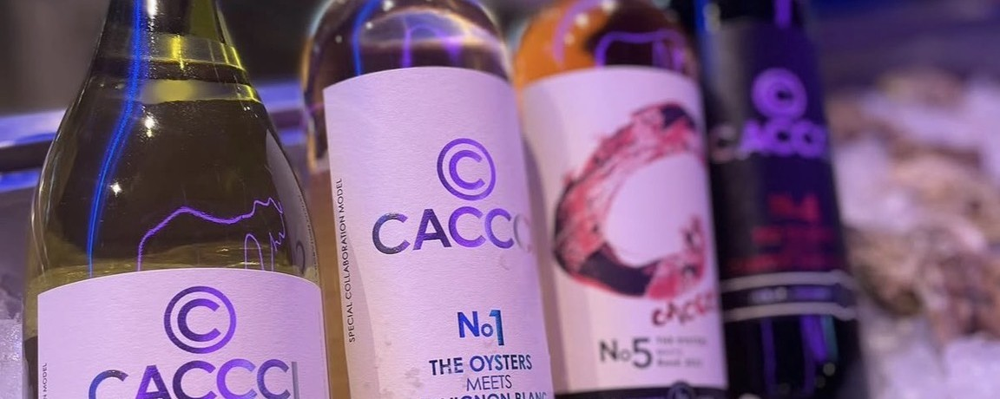

Q & A FAQ
We have compiled questions mainly from first-time guests.
Please feel free to contact us about any concerns, including how to enjoy oysters comfortably in Susukino, Sapporo.
- Q I'm worried about raw oysters...
-
A
There is no need to start with raw oysters if you are unsure. We also offer grilled oysters, fried dishes, and pasta, making oysters in Susukino easier to enjoy at your own pace.
If you let the staff know when you arrive, we will suggest a menu that suits your physical condition and mood. - Q How to ask without making a mistake even if it's your first time?
- A We recommend starting with an "assorted platter" to learn about the different regions and flavors. Next, increase your satisfaction with grilled oysters or pasta, and finish off with something like risotto.
- Q Are raw oysters safe? How fresh is it?
-
A
The basic idea is to assess the condition when purchasing and only handle "good quality" products. We also strictly control temperature and hygiene to ensure safety in daily operations.
However, raw oysters can be affected by your physical condition and constitution, so on days when you feel uneasy, we recommend heating them. For detailsReason for peace of mindPlease take a look. - Q Some of my companions don't like oysters...
- A No worries. We have a variety of menus including heated menus, cold and hot seafood dishes, and pasta.
- Q What are your business hours?
-
A
The latest business hours are subject to change depending on facility management.
Before your visitStore overviewPlease check orinquiryplease. - Q Do I need an appointment? How can I make a reservation?
-
A
We can guide you if there are seats available on the day. By making a reservation, you can reserve your desired seat.
Call us (011-215-1319) orContact formPlease contact us from. - Q Where do oysters come from?
-
A
We carefully select oysters from Japan and abroad depending on the season and daily availability.
Please feel free to ask our staff about the day's lineup. - Q Can you accommodate food allergies or intolerances?
-
A
We will do our best to accommodate your request. Please let the staff know when making your reservation or when you arrive.
Please note that we cannot guarantee complete removal as all the food is cooked in the same kitchen. - Q Can I bring small children?
-
A
We will guide you depending on the time of day and congestion.
If you would like to enter the store with a stroller or have a seat, please contact us in advance. - Q What payment methods do you accept?
-
A
You can use credit cards, electronic money, QR code payments, cash, etc.
Please check in-store or by phone for details. - Q Can I do takeout?
- A Takeout is not available.
- Q Is smoking allowed?
- A All seats in the store are non-smoking. If you wish to smoke, please use the designated smoking area within the facility.
- Q Can it be used by groups or reserved for private use?
-
A
We will make suggestions depending on the number of people and your budget.
If you would like to use the event/partyinquiryplease. - Q Do you have any other options other than raw oysters, which I don't like?
-
A
We offer grilled and fried oysters, seafood, appetizers, and a variety of drinks.
For more detailsmenuPlease take a look.